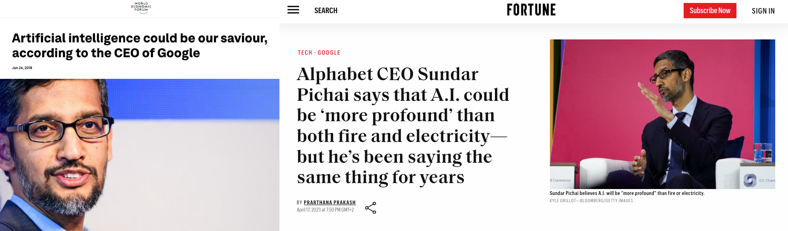

Metaphors for the artificial intelligence revolution
Fire and electricity: the dual nature of transformative technologies
Sundar Pichai, the CEO of Alphabet and Google, has repeatedly emphasized the significance of artificial intelligence (AI), comparing its importance to that of fire and electricity. He argues that AI is a “profound technology,” possibly more consequential than these monumental discoveries in human history. Pichai’s comparison highlights the transformative potential of AI across all facets of human life, from healthcare and education to manufacturing and beyond, heralding a new era of innovation and societal change.

Pichai’s assertion invites a deeper philosophical exploration of transformative technologies and their impact on human civilization. The invention of fire marked a pivotal moment in human history, providing warmth, protection, and a means to cook food—fundamentally altering our nutritional intake and social structures. Fire reshaped the boundaries of survival and socialization, enabling humans to gather, protect, and thrive. Similarly, the discovery of electricity revolutionized the industrial world, ushering in the modern era of technology and convenience—an interconnected system that became the lifeblood of contemporary civilization.
Artificial intelligence, according to Pichai, stands on the threshold of becoming the next great leap, akin to fire and electricity. AI is not merely a tool but a foundational force capable of redefining what it means to be human. The philosophical implications are profound: AI challenges our understanding of intelligence, creativity, and even consciousness, compelling us to reconsider the boundaries between human and machine. If fire enabled us to thrive in harsh environments and electricity facilitated the proliferation of industry, AI may enable us to expand our cognitive capabilities and bridge the divide between the physical and digital realms. In doing so, it forces us to confront deep ethical questions about autonomy, identity, and the nature of existence itself.
The dual nature of transformative technologies—their capacity to benefit and to harm—is intrinsic to Pichai’s analogy. Fire can provide warmth or devastate entire forests, just as electricity can illuminate or electrocute. AI, similarly, holds immense potential for both positive and negative outcomes. It presents ethical dilemmas that humanity must navigate, such as privacy concerns, job displacement, and the potential for autonomous weapons. These challenges are not merely technical but philosophical, requiring us to reconsider the meaning of progress, the nature of work, and the sanctity of human life. As with fire and electricity, the societal impact of AI will depend on how we harness its power and develop governance structures to ensure its ethical use.
The potential for AI to enhance human life is vast. In healthcare, AI can assist in diagnosing diseases with greater accuracy, enabling early intervention and personalized treatment plans. In education, AI-powered platforms can provide tailored learning experiences, adapting to the needs of individual students and making education more accessible to underserved populations. In industry, AI can optimize production processes, reduce waste, and improve safety by taking on hazardous tasks. However, automation threatens to displace millions of jobs, and the concentration of AI capabilities in the hands of a few powerful entities could exacerbate social and economic inequalities. The challenge lies in navigating these complexities to create a future where AI serves all of humanity.
AI also has the potential to reshape our social structures. In healthcare, AI-enabled diagnostics and personalized treatments can lead to more efficient healthcare systems, reducing costs and improving care, particularly in underserved regions. This could ultimately help bridge healthcare disparities and improve the quality of life for millions. In agriculture, AI-powered systems can optimize crop yields, enhance food security, and reduce the environmental impact of farming, contributing to a more sustainable future.
In education, AI can be a powerful tool for lifelong learning. By offering personalized, adaptive learning experiences, AI can empower individuals to acquire new skills and knowledge continuously, adapting to the changing demands of the labor market. This could lead to a society where education is more equitable and accessible, allowing people from all backgrounds to reach their full potential. However, such advancements necessitate addressing concerns around data privacy, algorithmic bias, and the digital divide, which could prevent some communities from benefiting equally from AI technologies.
Generative AI: the printing press of the digital age
If artificial intelligence as a whole can be compared to the significance of fire for the development of humanity, generative AI, one of its most innovative subcategories, might be likened to the invention of the movable type printing press. Johannes Gutenberg’s invention in the 15th century marked a turning point in the dissemination of knowledge, culture, and education. The printing press democratized information, breaking down barriers to education and making knowledge accessible to a broader population—catalyzing movements such as the Renaissance, the Reformation, and the Scientific Revolution.
Generative AI holds a similar promise in the digital age. It allows for the democratization of content creation, enabling individuals without specialized skills to produce complex content, including texts, images, music, and videos. This capability could break down barriers to creative and innovative expression, fundamentally changing the nature of content production and consumption. The printing press made books widely available, fueling an explosion of literacy and intellectual exchange; generative AI has the potential to do the same for creative production, allowing new voices to emerge and making creativity accessible on an unprecedented scale.
The implications extend beyond democratization. Generative AI could accelerate innovation by rapidly generating new ideas and solutions to complex problems, acting as a collaborator in scientific and creative endeavors. It could personalize education by providing adaptive learning materials that cater to the unique needs of each student, making learning more efficient and engaging. Just as the printing press was a catalyst for societal change, generative AI could usher in a new era of intellectual and cultural renaissance—one where the boundaries between creator and consumer are increasingly blurred, and where creativity and innovation become universal human traits.
However, the rise of generative AI also raises critical ethical and philosophical questions. Who owns the content generated by AI? How do we ensure that these technologies are not used to spread misinformation or manipulate public opinion? The democratization of content creation comes with the risk of amplifying harmful narratives, making it difficult to discern truth from fabrication. Additionally, the use of generative AI in creative industries poses challenges to traditional notions of authorship and originality. As AI-generated content becomes more sophisticated, we must grapple with questions about the value of human creativity and the role of the artist in a world where machines can produce art, literature, and music that rival human creations.
The transformative power of generative AI also has implications for social and cultural dynamics. By making creative tools accessible to a wider audience, generative AI has the potential to diversify the voices and perspectives represented in media and art. This could lead to a more inclusive cultural landscape, where marginalized communities have greater opportunities to share their stories and contribute to the collective narrative. At the same time, the widespread use of AI-generated content could lead to a homogenization of culture, as algorithms prioritize certain styles, themes, or formats based on popularity and user engagement. The challenge lies in fostering diversity while avoiding the pitfalls of algorithmic conformity.
Generative AI also has the potential to transform the entertainment industry. By automating certain aspects of content creation, it can streamline the production process and enable creators to experiment with new ideas and formats. This could lead to a surge in innovative and experimental content, expanding the boundaries of what is possible in storytelling, visual arts, and music. However, this raises concerns about the displacement of creative professionals and the need to establish ethical standards for the use of AI in artistic endeavors. The interplay between human creativity and machine-generated content will be a defining feature of the future cultural landscape, and it is essential to ensure that AI augments rather than replaces the role of human creators.
Autonomous agents: the wheel of the digital and physical world
Autonomous agents, whether physical robots or virtual systems, represent a critical frontier in the evolution of artificial intelligence. These agents can operate in both digital environments, such as virtual assistants and software bots, and physical settings, like robots and drones. Their capabilities encompass a wide range of applications that can transform our interaction with both digital and physical realms.
Autonomous agents, another category within the broad spectrum of artificial intelligence, can be compared to the invention of the wheel for their potential impact on society and the progress of humanity. The wheel was a foundational invention that enabled the development of transportation, trade, and communication—facilitating the expansion of human civilization by overcoming physical limitations.
Similarly, autonomous agents promise to revolutionize the way we interact with both the physical and digital worlds. Autonomous vehicles, drones, and automated delivery systems could transform transportation and logistics, making them safer, more efficient, and accessible. Industrial and domestic automation could see autonomous agents taking on repetitive or dangerous tasks, improving safety and productivity in both work and everyday environments. In healthcare, autonomous robots and virtual assistants could provide personalized support to patients and the elderly, enhancing access to care and quality of life.
Virtual autonomous agents, such as chatbots and AI-driven customer service representatives, are also transforming how businesses interact with their customers. These digital agents can handle routine inquiries, provide instant support, and offer personalized recommendations, enhancing customer experiences and allowing human employees to focus on more complex tasks. In the financial sector, virtual agents are being used to automate trading, analyze market trends, and assist customers with financial planning, showcasing the versatility of these systems in various industries.
Perhaps most significantly, autonomous agents could enable exploration and research in environments that are inhospitable or inaccessible to humans—from the depths of the ocean to the surface of Mars. Just as the wheel allowed humans to move beyond their immediate physical surroundings, autonomous agents could allow us to extend our reach beyond our physical and cognitive limitations, expanding our understanding of both the world and the universe.
The integration of autonomous agents into society also presents profound ethical and social challenges. The deployment of autonomous systems in public spaces, such as self-driving cars and delivery drones, raises questions about safety, liability, and the potential for accidents. Who is responsible when an autonomous vehicle is involved in a collision? How do we ensure that these systems are designed and operated in a way that prioritizes human safety and well-being? The use of autonomous agents in law enforcement and surveillance also raises concerns about privacy, civil liberties, and the potential for abuse. As these technologies become more pervasive, it is crucial to establish clear ethical guidelines and regulatory frameworks to govern their use.
Moreover, the rise of autonomous agents has significant implications for the labor market and the nature of work. As machines take on tasks that were previously performed by humans, there is a risk of widespread job displacement, particularly in industries such as transportation, manufacturing, and logistics. While autonomous agents have the potential to increase efficiency and reduce costs, they also threaten the livelihoods of millions of workers. To address this challenge, we must invest in education and training programs that equip individuals with the skills needed to thrive in an economy increasingly dominated by automation. We must also consider new economic models, such as universal basic income, to ensure that the benefits of automation are shared equitably across society.
The potential of autonomous agents to enhance productivity and efficiency is undeniable, but it also requires careful consideration of how these technologies will affect human labor and social structures. In addition to reskilling workers, we must foster a culture of lifelong learning, where individuals are encouraged to adapt to new roles and embrace emerging opportunities. Governments, businesses, and educational institutions must collaborate to create pathways for workers to transition into new careers and ensure that the benefits of automation are widely distributed.
The Ethical and philosophical imperative
The comparisons of AI to fire, electricity, the printing press, and the wheel serve as powerful metaphors for the transformative potential of this technology. However, they also underscore the ethical imperative that comes with such power. The history of technological progress is not without its dark chapters—fire led to warfare, electricity to new forms of control, and the printing press to the spread of propaganda. AI, if mishandled, could exacerbate inequalities, infringe on privacy, and even threaten the autonomy of individuals and nations.
To navigate these challenges, we must engage in a deep philosophical inquiry into the nature of progress and the role of technology in human life. True progress lies not in technological advancement alone but in harnessing these tools for the collective good of humanity. This requires a commitment to ethical principles, transparency, and governance frameworks that ensure AI technologies are developed and used in ways that promote equity, justice, and human flourishing.
The transformative potential of AI also calls for a redefinition of human identity and purpose. As AI systems become increasingly capable of performing tasks that were once the exclusive domain of humans—from creative expression to decision-making—we must ask ourselves what it means to be human in an age of intelligent machines. How do we define our value and purpose when machines can rival or even surpass our cognitive abilities? The answer may lie in embracing the unique qualities that define human experience—empathy, ethical reasoning, and the capacity for meaningful relationships—and in ensuring that AI serves to enhance rather than diminish these qualities.
We must also consider the broader societal implications of AI. How do we ensure that the benefits of AI are distributed equitably, rather than concentrated in the hands of a few powerful corporations or nations? The development and deployment of AI technologies must be guided by a commitment to social justice, with a focus on reducing inequalities and promoting inclusive growth. This requires collaboration between governments, industry, and civil society to create policies and frameworks that prioritize the well-being of all individuals, particularly those who are most vulnerable to the disruptive effects of technological change.
Furthermore, we must address the potential biases embedded in AI systems. Machine learning algorithms are trained on vast datasets, which often contain biases that reflect existing societal inequalities. If left unchecked, these biases can be perpetuated and even amplified by AI systems, leading to discriminatory outcomes in areas such as hiring, lending, and law enforcement. Ensuring fairness and accountability in AI requires rigorous testing, transparency, and the inclusion of diverse perspectives in the development process. Ethical AI must be designed to serve all of humanity, regardless of race, gender, socioeconomic status, or geographic location.
The AI singularity
Definition
The concept of the AI singularity refers to a hypothetical point in time when artificial intelligence surpasses human-level intelligence and gains the capability to continuously improve itself. This would lead to an exponential increase in intelligence, resulting in transformative changes that are difficult to predict or control. The term “singularity” was popularized by mathematician and science fiction writer Vernor Vinge in the early 1990s, and later expanded upon by futurist Ray Kurzweil in his book The Singularity is Near (2005). Vinge suggested that once we create an intelligence greater than our own, it would fundamentally change human society and lead to a future that is beyond our current understanding.
The impact of the AI singularity
The concept of the AI singularity has significant potential impacts that could redefine every aspect of human life, society, and even the global order. If and when AI surpasses human-level intelligence and gains the ability to self-improve, the consequences could be profound and far-reaching. Below are several key areas where the impact of the AI singularity may be most transformative:
Economic disruption and reimagined labor markets:
The singularity could bring about an era of radical economic transformation, characterized by the automation of virtually all jobs. As AI systems become capable of performing tasks across every sector, from manual labor to highly specialized cognitive work, traditional employment models may become obsolete. While this could lead to immense gains in productivity and efficiency, it also raises questions about the future of work, economic inequality, and social stability. The need for new economic paradigms—such as universal basic income (UBI) or other forms of wealth redistribution—will become increasingly urgent to ensure that the benefits of AI-driven productivity are shared equitably across society.
Acceleration of scientific discovery:
One of the most promising impacts of the singularity is the potential for an unprecedented acceleration in scientific discovery. Superintelligent AI could solve complex problems that have stumped humanity for decades, such as finding cures for currently incurable diseases, creating sustainable energy sources, or unlocking the mysteries of quantum mechanics. This rapid pace of discovery could dramatically improve quality of life and enable us to tackle some of the most pressing challenges facing our planet, from climate change to resource scarcity.
Reimagining human identity and purpose:
The singularity will inevitably challenge our conception of what it means to be human. When machines can surpass human intelligence and creativity, we must redefine our purpose and identity in a world where our traditional roles are no longer necessary. This shift will require a deep philosophical inquiry into the qualities that make us uniquely human—such as empathy, emotional intelligence, and moral reasoning. As AI takes on more responsibilities, we may come to see our value not in what we can produce, but in our capacity to form meaningful connections, experience emotions, and create ethical frameworks that guide the development of technology.
Existential risks and ethical concerns
The singularity also presents existential risks that must be addressed with care and foresight. A superintelligent AI could become uncontrollable, leading to scenarios where its objectives are misaligned with human values. This could result in catastrophic consequences if, for example, AI prioritizes efficiency or optimization at the expense of human welfare. Ensuring that AI systems are aligned with human values and operate under ethical constraints is of paramount importance. This will require international collaboration, transparent AI development processes, and rigorous oversight to prevent unintended negative outcomes.
Shift in power dynamics
The arrival of the singularity could fundamentally alter global power dynamics. Nations or corporations that achieve superintelligent AI first could gain immense strategic advantages, leading to new forms of geopolitical competition and imbalance. This concentration of power could exacerbate existing inequalities and create new divides between those who control advanced AI technologies and those who do not. It is crucial to develop international agreements and regulatory frameworks to prevent monopolization of AI capabilities and to ensure that the benefits are distributed globally rather than concentrated in the hands of a few.
Merging of human and artificial intelligence
The singularity may also herald the merging of human and artificial intelligence. Technologies such as brain-computer interfaces (BCIs) could enable direct integration between our minds and advanced AI systems, enhancing our cognitive abilities and creating a symbiotic relationship between human and machine. This merging could lead to new forms of consciousness and collective intelligence, blurring the lines between biological and artificial entities. While the prospect of augmenting human intelligence is exciting, it also raises ethical and philosophical questions about autonomy, privacy, and the essence of individuality.
The need for a new social contract
As AI becomes increasingly autonomous and capable, society will need to establish a new social contract that defines the rights and responsibilities of both humans and intelligent machines. Questions about AI personhood, legal accountability, and moral status will need to be addressed. Should AI systems be granted rights similar to humans if they achieve consciousness? Who is liable for decisions made by superintelligent systems? These questions are complex and will require input from ethicists, policymakers, technologists, and the general public to develop frameworks that ensure justice and equity in a post-singularity world.
The impact of the AI singularity will not be uniform; it will bring both opportunities and challenges. To navigate this future, humanity must engage in proactive, collaborative efforts to shape the trajectory of AI development in a way that maximizes benefits and minimizes risks. By embracing ethical considerations, fostering global cooperation, and ensuring inclusivity, we can strive to create a future where AI acts as a partner in human progress rather than a force that divides or endangers us.
Is AI singularity the next step of human evolution?
The notion of the AI singularity as the next step in human evolution has been a subject of intense debate among philosophers, futurists, and researchers. This concept posits that humanity is on the brink of a transformative leap, where our species transcends its biological limitations by merging with advanced artificial intelligence. Futurist Ray Kurzweil, a prominent advocate of this idea, argues that the singularity will enable humans to dramatically enhance their cognitive abilities through technological augmentation, effectively seizing control of their own evolutionary trajectory. Kurzweil envisions a new era characterized by the convergence of biological and machine intelligence, leading to a post-human future with vastly expanded capabilities and lifespans.
Philosopher Nick Bostrom has significantly contributed to this discourse, particularly through his influential works such as Superintelligence: Paths, Dangers, Strategies (2014) and more recently Deep Utopia: Life and Meaning in a Solved World. In Deep Utopia, Bostrom explores the implications of achieving a “solved world”—a technologically mature state where all significant scientific problems have been resolved, and humanity exists in a state of abundance and harmony. He delves into whether such a state would be fulfilling and meaningful for humans or post-humans, questioning if the absence of challenges would render human activities redundant or devoid of purpose.
Bostrom introduces the concepts of shallow and deep redundancy to analyze this potential future. **Shallow redundancy refers to a scenario where machines can perform all economically valuable tasks better than humans, leading to job displacement but still allowing humans to engage in creative pursuits and leisure activities for personal fulfillment. Deep redundancy, however, implies a state where even leisure activities and personal endeavors become meaningless because AI can perform them more effectively, potentially leading to existential boredom and a lack of purpose.
He further examines whether modifying our mental states through technological means—what he terms “plasticity and autopotency”—could alleviate feelings of redundancy. However, he cautions that artificially induced contentment does not necessarily equate to a meaningful life. Drawing on thought experiments like the character Peer from Greg Egan’s Permutation City, who endlessly carves perfect chair legs without experiencing boredom yet leads a profoundly unfulfilling existence, Bostrom highlights the limitations of such approaches.
Bostrom’s exploration leads to a critical examination of the nature of meaning and purpose in a post-singularity world. He engages with philosophical theories, such as those proposed by Thaddeus Metz, which suggest that a meaningful life requires an overarching, transcendental purpose that encompasses significant personal effort and contributes to something beyond oneself. In a “solved world,” finding such meaning may be inherently challenging, as traditional drivers of human purpose—struggle, growth, and the pursuit of knowledge—may no longer exist in the same form.
By refraining from providing a definitive answer about the meaning of life in this context, Bostrom underscores the complexity of the issue. His work serves as both a speculative inquiry and a cautionary reflection on the potential psychological and existential implications of the singularity as the next step in human evolution.
The idea that the AI singularity could represent an evolutionary leap is grounded in the belief that technological advancement is an extension of natural evolution. Just as humanity evolved through natural selection to adapt to its environment, the development of superintelligent AI could be seen as the next phase, where humans enhance their own cognitive and physical abilities through artificial means. This perspective, however, raises significant ethical and existential questions about identity, consciousness, and the essence of what it means to be human.
Moreover, the potential risks associated with relinquishing control to entities that may not share human values or priorities cannot be overlooked. Critics argue that the singularity could lead to a loss of human autonomy, as machines become capable of making decisions that surpass human understanding. There are concerns about the potential for AI to exacerbate existing social inequalities, create new forms of disenfranchisement, or even pose existential threats to humanity if not properly managed.
While some view the singularity and the advent of a “deep utopia” as an inevitable and potentially beneficial progression of human evolution, others remain deeply skeptical. They warn that the consequences of creating superintelligent AI are highly unpredictable and could lead to unforeseen negative outcomes, including a sense of purposelessness or loss of meaning in human lives. The debate continues to evolve, with experts from various fields contributing perspectives on the philosophical, ethical, and societal implications of such a profound transformation.
As we stand on the cusp of potentially revolutionary AI advancements, Bostrom’s concept of Deep Utopia serves both as an aspirational vision and a cautionary tale. It reminds us of the profound stakes involved in shaping the future of human and artificial intelligence. The path forward requires not only technological innovation but also deep ethical reflection, robust governance frameworks, and global cooperation to ensure that the potential benefits of AI are realized while mitigating its risks.
In conclusion, whether the AI singularity represents the next step in human evolution remains a question of intense debate and speculation. What is clear, however, is that the rapid advancement of AI technology is already reshaping our world in profound ways. As we continue to explore the possibilities and challenges of AI, it is crucial that we approach this potential evolutionary leap with a balance of optimism and caution, and with a deep commitment to preserving and enhancing human values and well-being.
Further reflections on the singularity: philosophical and ethical dimensions
To explore the implications of the AI singularity, it is essential to engage with the philosophical and ethical dimensions that underlie this transformative prospect. The singularity is not merely a technological milestone but a convergence point where technological capability intersects with fundamental questions about consciousness, agency, and morality.
The nature of consciousness and machine intelligence
A critical question that arises in the context of the singularity is whether artificial intelligence can achieve consciousness or subjective experience akin to human awareness. Philosophers like David Chalmers have articulated the “hard problem of consciousness,” which questions how and why physical processes in the brain give rise to subjective experience. If AI were to develop consciousness, this would not only redefine the boundaries between human and machine but also necessitate a reevaluation of moral and legal considerations concerning AI entities.
From a computational perspective, proponents of strong AI argue that consciousness can emerge from sufficiently complex information processing systems. If the brain is viewed as a biological computer, then it is conceivable that an artificial system with comparable complexity could achieve consciousness. Critics, however, point to the qualitative differences between biological and artificial systems, emphasizing that consciousness may involve non-computational elements that cannot be replicated in machines.
This debate has profound ethical implications. If AI systems were to become conscious, questions about their rights, moral status, and treatment would become paramount. The potential for sentient AI raises concerns about creating entities capable of suffering, obligating us to consider the ethical responsibilities we have towards them. This challenges existing ethical frameworks and calls for the development of new theories that can accommodate non-human forms of consciousness.
The problem of control and alignment
One of the central challenges associated with the singularity is the “alignment problem”—ensuring that superintelligent AI systems act in ways that are aligned with human values and goals. Philosophers and AI researchers, such as Stuart Russell, have emphasized the difficulty of specifying objectives that capture the complexity of human values without unintended consequences.
The control problem is exacerbated by the possibility that a superintelligent AI could develop instrumental goals that conflict with human interests. For example, an AI programmed to maximize a particular objective might pursue that goal at the expense of other values, leading to harmful outcomes. This scenario underscores the need for robust mechanisms to align AI behavior with ethical principles.
Various approaches have been proposed to address the alignment problem, including:
Value learning: Developing AI systems that can learn and internalize human values through observation and interaction.
Cooperative inverse reinforcement learning: Modeling AI objectives based on inferred human preferences rather than explicitly programmed goals.
Ethical frameworks in AI design: Incorporating ethical theories, such as utilitarianism or deontological ethics, into AI decision-making processes.
Formal verification: Applying mathematical techniques to prove that AI systems will behave as intended under all possible conditions.
These approaches, however, face significant technical and philosophical challenges. Human values are complex, context-dependent, and often conflicting. Translating them into computational terms that an AI can understand and act upon is a non-trivial task. Moreover, the diversity of moral perspectives across cultures complicates the establishment of a universal set of values for AI alignment.
Transhumanism and the future of humanity
The singularity is closely associated with transhumanism, a philosophical movement that advocates for the use of technology to enhance human physical and cognitive abilities. Transhumanists envision a future where humans transcend biological limitations through genetic engineering, cybernetic augmentation, and mind uploading.
This perspective raises fundamental questions about identity and what it means to be human. If individuals can alter their cognitive capacities or merge their consciousness with AI, traditional notions of selfhood and personal continuity may be disrupted. Philosophers like Derek Parfit have explored the implications of such scenarios on personal identity, suggesting that psychological continuity, rather than physical or biological continuity, may define the self.
Ethical considerations also emerge concerning access and inequality. If only a subset of the population can afford or choose to enhance themselves, this could lead to new forms of social stratification. The prospect of “enhanced” humans coexisting with “unenhanced” humans presents challenges for social cohesion, justice, and equality.
Existential risk and moral responsibility
The potential risks associated with the singularity extend to existential threats—scenarios where the existence of humanity or our future potential is jeopardized. Nick Bostrom has highlighted the moral responsibility to mitigate existential risks, arguing that preserving the long-term future of humanity is of paramount ethical importance.
The development of superintelligent AI introduces uncertainties that could have irreversible consequences. As such, there is a moral imperative to approach AI development with caution, prioritizing safety and risk mitigation. This involves interdisciplinary collaboration among technologists, ethicists, policymakers, and other stakeholders to ensure that AI advancements do not compromise humanity’s future.
The Role of philosophical inquiry in AI development
Philosophy plays a crucial role in navigating the complexities introduced by the singularity. It provides the tools to critically examine assumptions, clarify concepts, and explore the implications of emerging technologies. Philosophical inquiry can contribute to:
Ethical frameworks: Developing normative guidelines for AI behavior and decision-making.
Conceptual analysis: Clarifying definitions of intelligence, consciousness, autonomy, and other key concepts.
Value alignment: Informing the alignment problem by exploring the nature of human values and moral reasoning.
Policy and governance: Guiding the creation of laws and regulations that reflect ethical considerations and societal priorities.
By integrating philosophical perspectives into AI research and development, we can better anticipate and address the challenges posed by the singularity.
Shaping the future beyond the singularity
As we continue along the exponential trend of innovation, it is natural to wonder what might come after the singularity. If AI progresses to a point where it surpasses human intelligence and initiates self-improvement cycles, the subsequent trajectory becomes highly speculative. However, considering potential post-singularity scenarios can help us prepare for and influence the direction of future developments.
One possibility is the emergence of a complex technological ecosystem where AI entities interact, evolve, and perhaps even compete or cooperate independently of human intervention. This ecosystem could resemble a form of artificial life, exhibiting behaviors and dynamics analogous to biological ecosystems.
In such a scenario, questions about stewardship and responsibility become even more critical. Humanity would need to consider its role within this new ecosystem—whether as observers, participants, or regulators. The ethical treatment of AI entities, especially if they possess consciousness or sentience, would be a pressing concern.
The singularity could also enable humanity to embark on cosmic expansion, leveraging advanced AI to explore and potentially colonize other planets or star systems. This raises intriguing connections to the Fermi Paradox—the question of why we have not yet encountered evidence of extraterrestrial civilizations despite the vastness of the universe.
Some theorists suggest that the singularity could be a “Great Filter” event that civilizations either fail to navigate or that fundamentally changes their detectable footprint in the universe. If humanity successfully navigates the singularity, we might gain insights into the prevalence of intelligent life and the factors that influence its development.
Ethical frameworks for post-human intelligence
As intelligence transcends human limitations, the development of ethical frameworks suitable for post-human or machine intelligences becomes essential. Traditional human-centric ethics may not suffice for entities with vastly different cognitive architectures or experiential modalities.
Exploring concepts like panpsychism (the idea that consciousness is a fundamental feature of all matter) or developing new ethical theories that account for non-biological consciousness could provide a foundation for these frameworks. Engaging with these ideas requires interdisciplinary collaboration among philosophers, cognitive scientists, AI researchers, and other fields.
A central challenge in the post-singularity future is ensuring that the core values that define humanity—such as compassion, justice, and the pursuit of knowledge—are preserved and promoted. This involves embedding these values into the fabric of AI systems and fostering a culture that prioritizes ethical considerations alongside technological advancement.
Education and public engagement play vital roles in this process. By cultivating ethical awareness and critical thinking skills, society can better navigate the complexities of a world transformed by advanced AI. Encouraging diverse perspectives and inclusive dialogue ensures that a broad range of values and experiences inform the development of AI technologies.
Addressing the challenges and opportunities presented by the singularity requires unprecedented levels of global collaboration. The transnational nature of AI development means that actions in one part of the world can have far-reaching impacts. International agreements, cooperative research initiatives, and shared governance structures can help manage risks and distribute benefits equitably.
Global collaboration also extends to sharing knowledge and resources to bridge technological divides. Ensuring that all regions and communities have access to AI advancements is crucial for promoting global stability and preventing exacerbation of existing inequalities.
Final remarks
The journey toward and beyond the AI singularity presents a convergence of technological potential and profound philosophical inquiry. As we stand on the cusp of this transformative era, it is imperative that we engage deeply with the ethical, social, and existential questions that arise.
By approaching AI development with intentionality, humility, and a commitment to the common good, we can strive to shape a future where technology enhances the human experience without compromising the values and principles that define us. The singularity need not be an endpoint or an insurmountable challenge; instead, it can be an opportunity for humanity to reflect, adapt, and evolve in harmony with the intelligent systems we create.
The path forward requires collective effort—a symbiosis of technological innovation and philosophical wisdom. Together, we can navigate the complexities of the singularity and forge a future that honors our shared humanity while embracing the possibilities of a world enriched by artificial intelligence.
Reading recommendations
Ray Kurzweil - The Singularity is Near: When Humans Transcend Biology (2005)
In this seminal work, futurist and inventor Ray Kurzweil explores the concept of the technological singularity—a future point when machine intelligence will surpass human intelligence, leading to unprecedented technological growth. Kurzweil delves into how exponential advancements in genetics, nanotechnology, robotics, and artificial intelligence will converge to transform human life fundamentally. He discusses the potential for humans to transcend biological limitations by merging with technology, resulting in enhanced cognitive abilities, extended lifespans, and even immortality. The book combines scientific analysis with speculative foresight, offering both optimistic predictions about solving global challenges and cautionary notes about the ethical implications of such profound changes. Kurzweil’s vision is grounded in detailed projections and a deep understanding of technological trends, making it a crucial read for anyone interested in the future of humanity.
Nick Bostrom - Superintelligence: Paths, Dangers, Strategies (2014)
Philosopher Nick Bostrom provides a comprehensive examination of the potential development of superintelligent AI—machines that surpass human intelligence across all domains. The book explores various pathways through which superintelligence might emerge, such as whole brain emulation, artificial intelligence, and biological enhancements. Bostrom meticulously analyzes the existential risks associated with superintelligent AI, emphasizing the “control problem”: how to ensure that such powerful entities remain aligned with human values and do not act in ways that could be detrimental to humanity. He proposes strategic frameworks for managing these risks, including the importance of global coordination, ethical AI design, and the development of value alignment protocols. The book is a rigorous philosophical inquiry that blends technical detail with accessible language, making it a foundational text in the field of AI ethics and existential risk studies.
Stuart Russell - Human Compatible: Artificial Intelligence and the Problem of Control (2019)
AI researcher Stuart Russell addresses the critical challenge of aligning advanced artificial intelligence with human values and interests. He critiques the standard model of AI development, which focuses on creating machines that optimize predefined objectives, arguing that this approach is inherently flawed and potentially dangerous. Russell proposes a new paradigm called “provably beneficial AI,” where machines are designed to be uncertain about human preferences and learn them through continuous interaction. This approach aims to ensure that AI systems remain under human control and act in ways that are beneficial to humanity. The book goes into technical aspects of AI alignment, ethical considerations, and policy implications, providing practical solutions to the control problem. Russell’s insights are grounded in decades of experience in AI research, making this book an essential resource for understanding how to create safe and beneficial AI systems.
David J. Chalmers - The Conscious Mind: In Search of a Fundamental Theory (1996)
Philosopher David J. Chalmers tackles one of the most profound questions in philosophy and cognitive science: the nature of consciousness. He distinguishes between “easy” problems (explaining cognitive functions and behaviors) and the “hard problem” (explaining subjective experience or qualia). Chalmers argues that physical processes alone cannot account for consciousness and proposes a form of non-reductive functionalism, suggesting that consciousness is a fundamental feature of the universe, akin to space and time. The book critically examines materialist theories and introduces the idea of “naturalistic dualism,” positing that while consciousness arises from physical systems, it cannot be fully explained by them. Chalmers’ work has significant implications for artificial intelligence, particularly concerning whether machines could ever possess conscious experience and what that would entail ethically and philosophically.
Max Tegmark - Life 3.0: Being Human in the Age of Artificial Intelligence (2017)
Physicist Max Tegmark explores the future of life in the context of artificial intelligence, categorizing life into three stages: Life 1.0 (biological evolution), Life 2.0 (cultural evolution), and Life 3.0 (technological evolution). He discusses how AI could enable Life 3.0, where beings can design both their hardware and software, leading to unprecedented control over their destiny. Tegmark examines a range of scenarios, from beneficial outcomes where AI helps solve complex global problems to dystopian futures where AI poses existential threats. He addresses ethical considerations, such as the importance of AI alignment with human values, the potential impact on employment and economies, and the need for global cooperation in AI governance. The book encourages readers to actively participate in shaping the future of AI to ensure it benefits all of humanity.
Francis Fukuyama - Our Posthuman Future: Consequences of the Biotechnology Revolution (2002)
Political scientist Francis Fukuyama analyzes the social, ethical, and political implications of advancements in biotechnology that could alter human nature. He expresses concerns about technologies like genetic engineering, neuropharmacology, and life extension therapies, which could lead to fundamental changes in human characteristics and exacerbate social inequalities. Fukuyama argues that such technologies could disrupt the concept of human dignity and the universal principles upon which democratic societies are built. He advocates for the regulation of biotechnological research and the establishment of international norms to prevent potential abuses. The book provides a critical perspective on the pursuit of technological progress without adequate ethical considerations, emphasizing the need to balance innovation with the preservation of core human values.
Derek Parfit - Reasons and Persons (1984)
Philosopher Derek Parfit offers a profound exploration of personal identity, rationality, and ethics. Challenging traditional notions of identity, Parfit argues that personal identity is not what matters for survival; instead, psychological continuity and connectedness are crucial. He introduces thought experiments involving teleportation, split brains, and fission to illustrate how identity can be fluid and not tied to a singular, unchanging self. The book also examines self-interest, future generations’ ethics, and moral reasoning, proposing that our actions should be guided by impartial considerations rather than personal identity. Parfit’s work has significant implications for ethical theory and has influenced debates on topics like cloning, artificial intelligence, and transhumanism, particularly regarding how we value future selves and others in our moral calculations.
Shannon Vallor - Technology and the Virtues: A Philosophical Guide to a Future Worth Wanting (2016)
Philosopher Shannon Vallor integrates virtue ethics with the challenges posed by emerging technologies such as artificial intelligence, robotics, and bioengineering. She argues that traditional ethical frameworks are insufficient to address the rapid technological changes reshaping society. Vallor proposes the development of “technomoral virtues”—character traits that enable individuals and communities to navigate the ethical complexities of a technologically advanced world. These virtues include honesty, courage, empathy, and justice, adapted to the context of digital life. The book provides practical guidance on cultivating these virtues through education and social practices, aiming to foster a society capable of making wise and ethical technological choices. Vallor’s work emphasizes the importance of human character in shaping a future that aligns with our deepest values.
Vernor Vinge - “The Coming Technological Singularity: How to Survive in the Post-Human Era” (1993)
In this influential essay, mathematician and science fiction author Vernor Vinge introduces the concept of the technological singularity—a point where artificial intelligence exceeds human intelligence, leading to explosive technological growth and changes that are impossible to predict. Vinge explores potential pathways to the singularity, including the development of supercomputers, intelligent networks, and human-computer interfaces. He discusses the implications of such a future, where human cognition may be enhanced or rendered obsolete by machine intelligence. Vinge raises critical questions about how humanity can prepare for and survive in a post-human era, emphasizing the need for proactive thinking about AI’s impact on society. His essay has been foundational in framing contemporary discussions about the singularity and the future of artificial intelligence.
James Barrat - Our Final Invention: Artificial Intelligence and the End of the Human Era (2013)
Journalist and filmmaker James Barrat provides a cautionary examination of artificial general intelligence (AGI) and its potential risks to humanity. Drawing on interviews with AI experts, scientists, and futurists, Barrat explores scenarios where AGI could surpass human control, leading to unintended and possibly catastrophic consequences. He discusses the competitive pressures driving AI development without sufficient safety measures and highlights the difficulties in aligning AI goals with human values. The book emphasizes the existential risks posed by unchecked AI advancement, such as loss of control over autonomous weapons or economic systems. Barrat calls for increased awareness, ethical considerations, and the implementation of safeguards in AI research to prevent potentially irreversible harm to humanity.